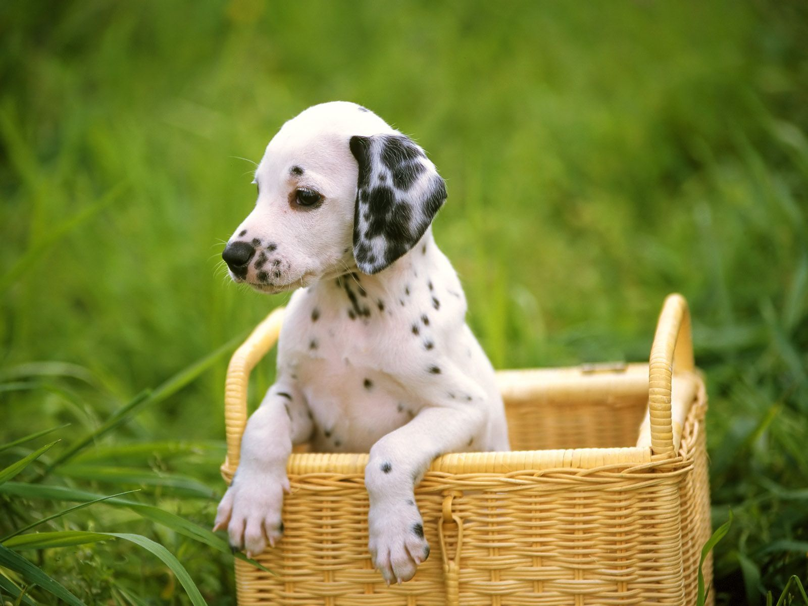
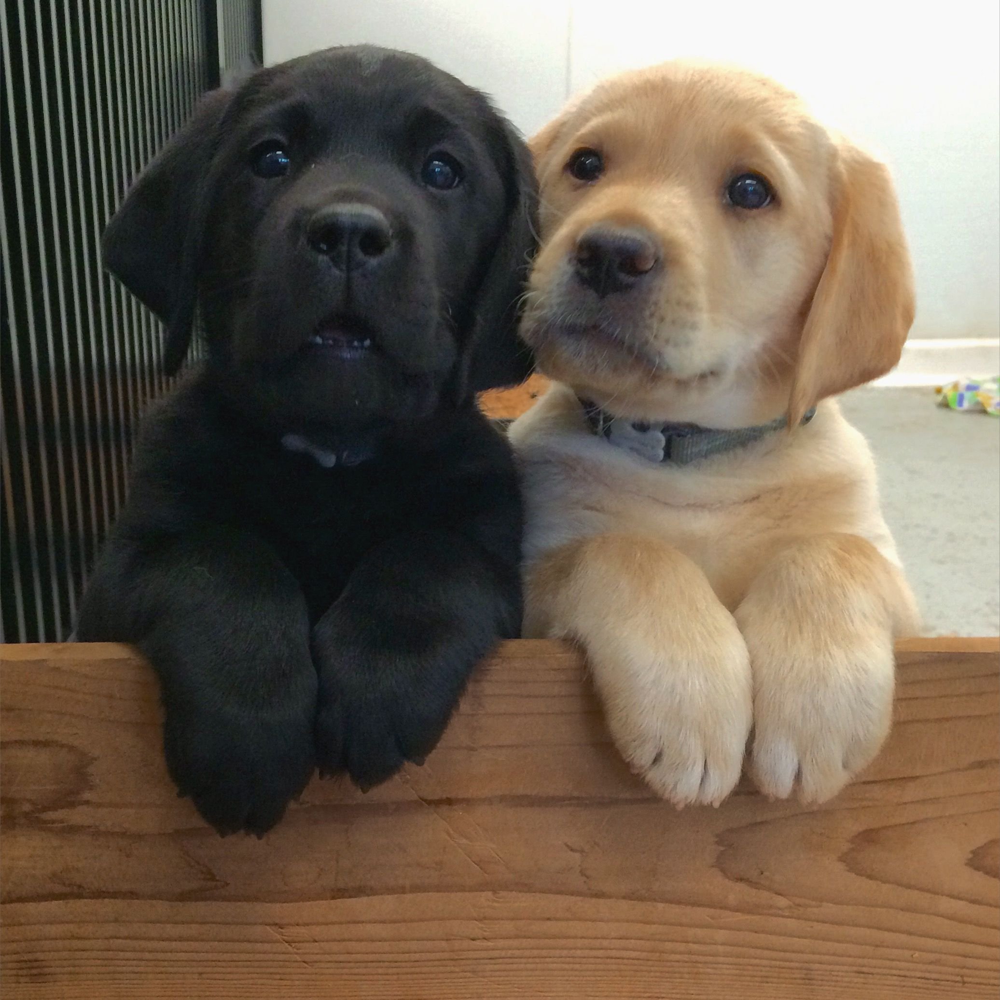
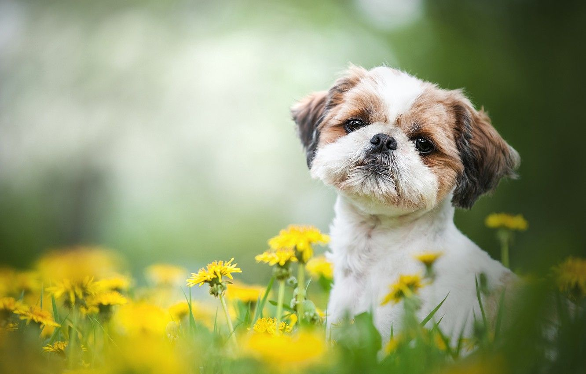
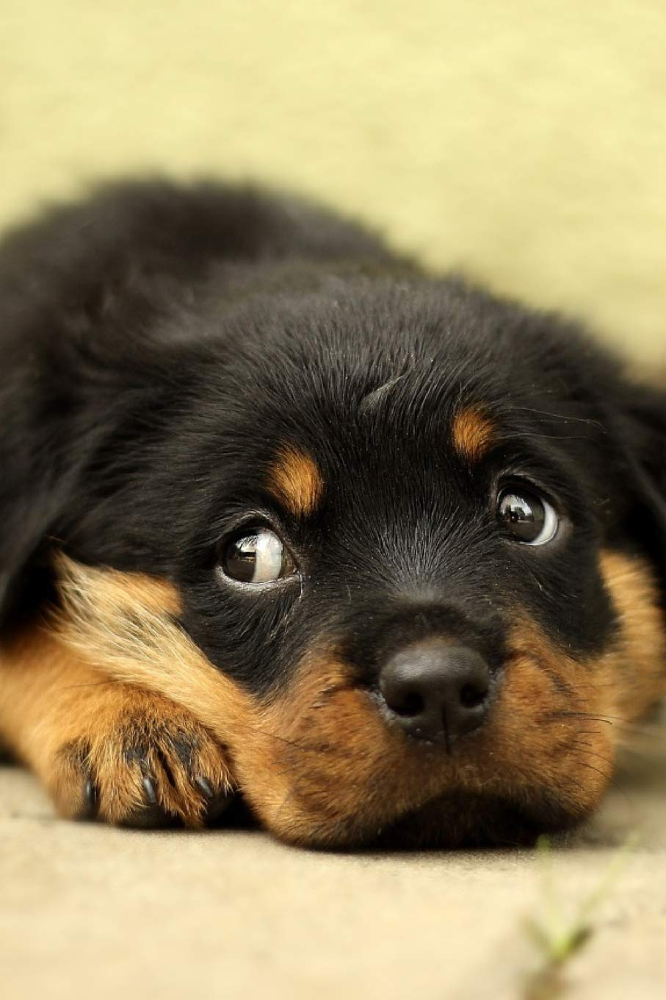
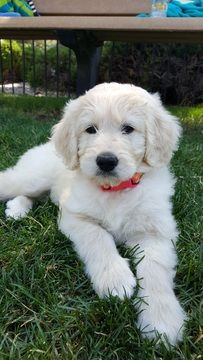
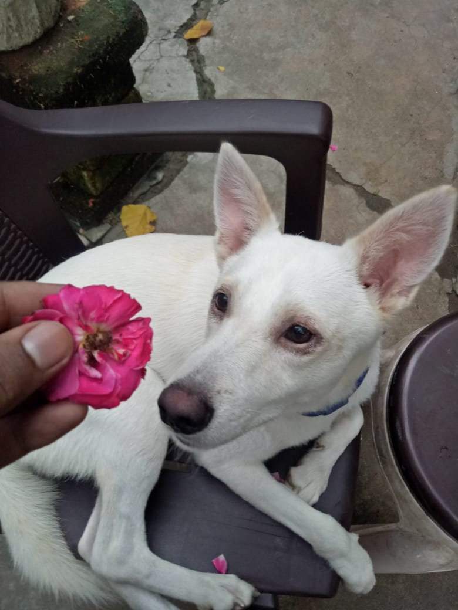

"BEST THERAPY HAS FUR AND FOUR LEGS"
Click the play button

A world filled with so much stress, and worry we need something to look forward to at the end of the day. What better thing to look forward to than coming home to your dog? After all they can do just about anything to make us feel better.
1. Protection. Dogs will lay with you and protect you when something is wrong. If you are sad, hurt, angry, etc. a dog can sense that and will do everything to love you and make you feel better. And even when it feels like everything is going wrong, when a dog nuzzles their little nose into you and continues to sit with you, you can’t help but feel better.
2. Unconditional Love. Dogs only know how to love, but most importantly only know how to love unconditionally. Your dog does not care about your grades, your mistakes, your flaws. Your dog is going to always love you for you no matter what, and there really isn’t anything better than that.
3. Energy. After a long day of work, or school often we are run down, and worn out, but there is no better feeling than when your dog jumps up to greet you when you get home. For no matter the day you have had your dog will always bring energy into your life by wanting to play with you, and you are lying if you say that isn’t the best thing ever.
4. Cuddle Buddies. Everyone wants to cuddle, but not everyone has a cuddle buddy. Grab your dog, not only are they the best but they love it too. Not to mention they are just about the cutest things ever. Sometimes it is hard to believe these furry little friends can even exist. For they provide so much love and light in our lives and honestly bring out the good in us. We really do not deserve them, but lord am I thankful that we have them in our lives.

Dalmatian Best known as the star of Disney’s 101 Dalmatians, this sleek and athletic Dalmatian dog breed has a history that goes back several hundred years. They started out as a coach dog but also served in many other capacities, including hunter, firehouse dog, and circus performer. Even though these are purebred dogs, you may find them in the care of shelters or rescue groups. Remember to adopt! Don’t shop if you want to bring a dog home

German Shepherd Dog The German Shepherd Dog is one of America’s most popular dog breeds — for good reasons. They’re intelligent and capable working dogs. Their devotion and courage are unmatched. And they’re amazingly versatile. The breed also goes by the name Alsatian. Despite their purebred status, you may find German Shepherds in shelters and breed specific rescues. So remember to adopt! Don’t shop if this is the breed for you.
Retriever The Golden Retriever is one of the most popular dog breeds in the United States. The breed’s friendly, tolerant attitude makes them great family pets, and their intelligence makes them highly capable working dogs. Golden Retrievers excel at retrieving game for hunters, tracking, sniffing out contraband for law enforcement, and as therapy and service dogs. They’re also natural athletes and do well in dog sports such as agility and competitive obedience.
Pyredoodle The Pyredoodle is a mixed breed dog–a cross between the Great Pyrenees and Standard Poodle dog breeds. Calm, fearless, and loyal, these pups inherited some of the best traits from both of their parents. Pyredoodles go by a few other names, including Pyreneespoo, Pyrepoo, and Pyreneesdoodle. Despite their unfortunate status as a designer breed, you can find these mixed breed dogs in shelters and breed specific rescues, so remember to adopt! Don’t shop!
Rottweiler The Rottweiler was originally dogs bred to drive cattle to market. Later they were used to pull carts for butchers. They were among the earliest police dogs and serve with honor in the military. Most important, they are popular family guardians and friends. Novice pet parents should beware, as these dogs are strong and intense. They need experienced care and training. Consistent, energetic pet parents will find a loving, faithful, and intelligent friend for life in a Rottie!
Shih-Poo The Shih-Poo is a mixed breed dog — a cross between the Shih Tzu and Toy Poodle dog breeds. Small, hypoallergenic and cuddly companions, these pups inherited some of the best qualities from both of their parents. Shih-Poos also go by the names Shoodle or Pooshi, but don’t confuse them with the Poo-Shi, the Poodle/Shiba Inu mix. Despite their status as a designer breed, you may find these mixed breed dogs in shelters and rescues. So remember to adopt! Don’t shop!
Pomeranian The Pomeranian combines a tiny body (no more than seven pounds) and a commanding big-dog demeanor. The abundant double coat, with its frill extending over the chest and shoulders, comes in almost two dozen colors, and various patterns and markings, but is most commonly seen in orange or red. Alert and intelligent, Pomeranians are easily trained and make fine watchdogs and perky pets for families with children old enough to know the difference between a toy dog and a toy. Poms are active but can be exercised with indoor play and short walks, so they are content in both the city and suburbs. They will master tricks and games with ease, though their favorite activity is providing laughs and companionship to their special human.